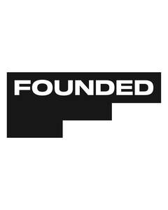
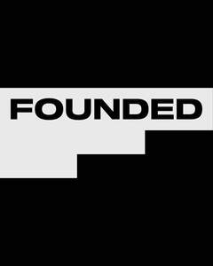

Trade Mark Journal No.2025/045 7 November 2025
UK00004287639 31 October 2025 (9,16,35,38,41,42)
Mark 1

Mark 2

Mark 3
Mark 4
- Class 9
- Podcasts; Audio books; Video recordings; Downloadable software; Mobile apps; Multimedia software; Electronic publications; Media content; downloadable podcasts.
- Class 16
- Printed material, namely, books, booklets, magazines, news papers and articles in the fields of business, lifestyle, personal development and the humanities; Printed Diaries; Personalized writing Journals; Printed Activity books for personal and relationship development; Drawing books; Printed Promotional publications in the field of Business, lifestyle, personal development and the humanities; Stationery; Printed Note pads; Printed Note books; Printed Calendars; Gift bags; Personal organisers; Instructional and teaching material, namely, printed textbooks, booklets, manuals and tests in the field of health and wellness; Pens; Pencils; Erasers; Printed Greetings cards; Cardboard badges; Paper name badges.
- Class 35
- Advertising and marketing services provided by means of podcasts and blogging; Distribution of advertising, marketing and promotional materials in the form of advertising; Distribution of promotional matter in the form of advertising; provision of information and advice relating to all the aforesaid services.
- Class 38
- Telecommunications services, namely, transmission of podcasts, live and prerecorded; Communication by online blogs and podcasts, namely, Transmission of information by electronic communications networks; Audio broadcasting services; Audio Broadcasting services in relation to podcasts; Audio Broadcasting services via the internet; Podcasting, namely, transmission of podcasts; Podcasting services, namely, transmission of podcasts; Transmission of podcasts; Provision of information and advice relating to all the aforesaid services.
- Class 41
- Entertainment services, namely, providing live and pre-corded online non-downloadable films, audio, video, podcasts and interviews, in the fields of entrepreneurship, executive leadership, personal development and the humanities; Online entertainment services, namely, providing online non-downloadable films, audio, video, podcasts and interviews, in the fields of entrepreneurship, executive leadership, personal development and the humanities; Entertainment services in relation to podcasts, namely, production services; Production of live television shows; Live performance services in relation to podcasts, namely, production services; Arranging, conducting, and presenting live entertainment events, namely, films, audio, video, podcasts and interviews, in the fields of entrepreneurship, executive leadership, , personal development and the humanities; Live stage shows featuring interviews and lectures in the fields of entrepreneurship, executive leadership, personal development and the humanities; Production of podcasts; Production of audio-visual media, namely, podcasts; Providing non-downloadable multi-media entertainment via a website, namely, providing audio and video productions featuring content in the fields of entrepreneurship, executive leadership, personal development and the humanities; Sound recording and video entertainment production services; writing of entertainment podcasts; writing of educational content for podcasts for entertainment purposes; Provision of entertainment via podcast; Provision of information and advice relating to all the aforesaid.
- Class 42
- Software as a service featuring software for accessing audio and video films and podcasts in fields of entrepreneurship, executive leadership, personal development and the humanities; Platform as a service featuring software for accessing audio and video films and podcasts in fields of entrepreneurship, entrepreneurship, executive leadership, personal development and the humanities; website hosting for podcasts featuring content in the fields of entrepreneurship, executive leadership, personal development and the humanities; Hosting of digital content on the internet; Hosting of digital content on the internet, namely, on-line journals, podcasts, films and blogs; Hosting digital multimedia entertainment content on the Internet; Provision of information and advice relating to all the aforesaid services.
SB INVEST LTD
Representative: Wallace LLP